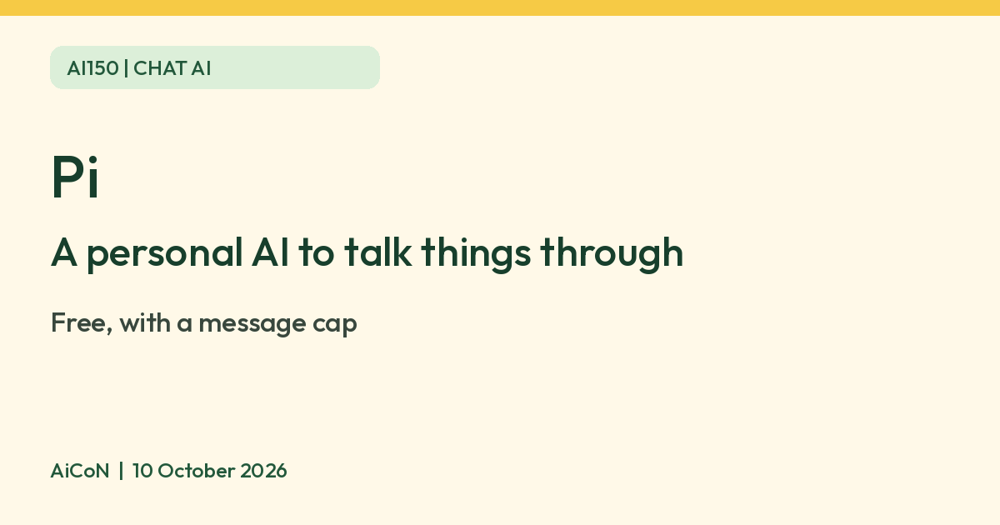

Pi: a free AI chat companion with voice and reminders
Pi, from Inflection AI, is a chat assistant for talking things through, with voice mode and reminders. The India App Store listing shows it as free. Inflection has announced a cap on message volume for free users; its exact current limit was not verified.

What it is
Pi is a chat assistant from Inflection AI. Its site describes "conversations with emotional intelligence": you can talk through a decision, prepare for a hard conversation, learn about a topic, or set reminders and to-dos. The iPhone app also has a voice mode.
Is it free
Yes. The App Store listing for India shows Pi as "Free", and Inflection AI says it is committed to keeping consumer Pi available and free. The same post says Inflection will put a cap on message volume for free users, so do not assume unlimited chatting. We found no paid consumer plan and no INR price on an official page.
How to try it
- Open pi.ai, or install the Pi app from the App Store (India listing).
- Start a chat. Pick a topic, or just say what is on your mind.
- Try voice mode if you prefer talking to typing.
Reminders and voice
Pi's current site promotes reminders and to-dos. Give a reminder a clear date and time, then check what Pi saved. Do not rely on it for urgent deadlines until you have tested notifications on your device.
The India iPhone listing describes voice mode. Its release notes list Hands-free and Tap to talk under Voice settings. We did not test voice or reminders on a device.
Limits to know
- Inflection announced a message cap for free users. We did not verify its current rollout or exact number, so we quote none.
- The App Store listing for India shows English only, and is rated 18+.
- Pi is not a doctor, lawyer or therapist. For health or mental health worries, talk to a qualified person.
- AI answers can be wrong. Check anything important.
- We did not test it ourselves.
Frequently asked questions
Do I need to pay?
No. The India App Store listing shows Pi as free.
Sources: Pi, App Store India listing, Inflection AI: The Future of Pi. Checked 10 October 2026.